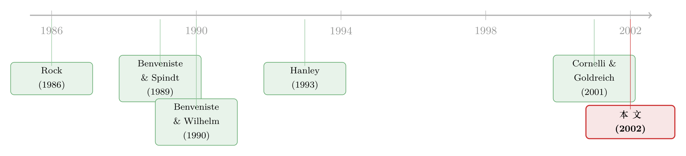

新股「打折」的真正理由，不是让你说真话，而是先让你肯掏钱
本文读的是 Sherman & Titman (2002, Journal of Financial Economics)：在一个「信息有成本」的簿记建档（book-building）模型里，投行折价发新股，真正要对付的不是投资者「谎报」的冲动，而是他们「搭便车、不肯花钱调研」的冲动。正是这道「信息采集约束」，第一次说清了——为什么投行偏要把一只新股，只卖给一小撮被它挑中的人。
1 一个看起来像「裙带关系」的谜题
先讲一桩华尔街的旧公案。
最大的那些新股发行（IPO），无论在美国还是越来越多的海外市场，用的都是同一套办法：簿记建档。投行先圈定一批投资者，请他们来评估这只票、报出各自的需求意向；然后投行据此定价、配售，谁喊得高，就多分点货。整个过程里有两件事一直被人诟病。第一，投行会把绝大多数投资者挡在门外——你想买，人家根本不带你玩。第二，这些新股平均还是折价发行的：上市第一天往往就涨一截，等于把钱白送给了那一小撮拿到配额的人。
两件事凑在一起，画面就很难看了：投行手握一份「打折的好东西」，却只发给自己挑中的客户。这不就是赤裸裸的利益输送吗？
学术界其实早有一个漂亮的辩护。Benveniste and Spindt (1989) 说，折价不是腐败，是信息的对价：投资者手里有投行不知道的信息，你要他如实说出来（尤其是「这票很好」这种会抬高发行价、对他自己不利的好消息），就得用折价的配额去贿赂他。于是折价成了一种「赎信息」的机制，自洽、优雅。
但这套说法留了一个尴尬的尾巴。它解释不了「排他性」。在 Benveniste-Spindt 的世界里，投资者越多，投行能收集的信息越多，需要付出的折价反而越低——既然如此，投行为什么不广发英雄帖，把全市场的人都请进来？把人往外赶，在那个模型里是一件纯亏本的事。
这就是 Sherman 和 Titman 要解的谜：簿记建档最显眼的特征——投行亲手限制参与人数——恰恰是已有理论最解释不了的那一块。
2 把一条被忽略的假设加回去：信息是要花钱买的
他们的解法，说穿了只动了一个地方：让信息变得有成本。
在 Benveniste-Spindt 那里，投资者天生就「知道」自己的信号，模型只需操心他肯不肯说。而在现实里，一个基金经理要对一只新股形成判断——读招股书、听路演、追问管理层、再把行业和宏观都想一遍——这是要付出真金白银的时间与精力的。Sherman-Titman 就把这笔成本明明白白写进模型：每个投资者想拿到一个信号，得先付 c 块钱。
一旦信息有了价格，一个全新的、更要命的激励问题就冒出来了：道德风险（moral hazard）下的搭便车。
设想你是被邀请的投资者之一。你心里清楚，投行最后会综合所有人报上来的信息去定价。那我何必自己掏 c 去调研呢？我直接搭别人的便车——反正只要别人都认真做了功课、票也确实是好的，我跟着喊一声「好」，照样能分到一份折价的配额。
如果人人都这么打算，那就没人去买信息了，簿记建档这台「信息收集机器」直接熄火。所以投行真正头疼的，从来不是「你会不会谎报」，而是「你到底肯不肯先花这笔钱」。
这是全文的枢纽。把它记住：在这个模型里，折价要同时对付两道关，但真正绷紧的那道，是「让你愿意去采集信息」，而不是「让你如实上报」。后面所有反直觉的结论，都从这一点长出来。
接着，一个自然的问题是：投行凭什么愿意为「定价准确」买单？这是模型的第二块基石。Sherman-Titman 假设，把价格定准本身是有经济价值的——可能是因为更准的价格能让发行人做出更好的投资决策（Subrahmanyam and Titman, 1999），可能是因为准确定价能给投行攒下声誉、吸引更高质量的客户（Titman and Trueman, 1986），也可能只是因为定价大错会招来官司。无论哪条理由，结论都一样：发行人事前会偏爱一个能把公司估得尽量准的发行机制。
于是投行的算盘变成了一道权衡：请的人越多，收上来的信息越多、定价越准；但请的人越多，要喂饱他们「肯花钱调研」的胃口，平均折价也得给得越足。人数 H，就是投行在「定价准确」和「折价成本」之间亲手拧的那个旋钮。
3 模型：三个日期，九个选择变量
把这套直觉写成模型，是这样的。
时间线。 三个日期。第 1 期，投行宣布价格与配售方案、并选定参与的 H 个投资者；投资者决定要不要花 c 买信号、以及要不要把信号如实告诉投行；投行据报上来的信息定下发行价。第 2 期，股票开始交易。第 3 期，真实状态揭晓，公司清算。
发行人与价值。 公司要融一笔固定的钱，卖固定的 N 股（固定股数是为了避开稀释问题）。真实状态有三种：好 (g)、坏 (b)、不确定 (u)。每股在状态 j 下的价值是 \(s_j\)，其中
$$ s_g = s_u + a, \qquad s_b = s_u - a, \qquad 0 < a \le s_u . $$
a 衡量「那条被投行漏掉的信息」一旦兑现，能把股价推离中枢 \(s_u\) 多远。
投资者与信号。 H 个风险中性的投资者，H 由投行选。每人花 c 可得一个信号，可能是好、坏、或中性（无信息）。一个干净的简化：被漏掉的信息要么是利好、要么是利空，不会同时存在，所以凡是收到有效信号的人，收到的是同一个信号。投资者的外部投资回报率 r 设为零；而且——这是相对已有文献的又一处松绑——不给投资者设硬性财富约束，因为 IPO 相对机构的资金体量太小，能买多少主要取决于投行配多少，而非投资者缺不缺钱。
概率。 令 p 为「确实存在被投行漏掉的相关信息」的概率，且这信息是好是坏各占一半。令 \(p_i\) 为「在信息确实存在的条件下，投资者 i 收到有效信号」的条件概率。于是投资者 i 收到一个好（或坏）信号的无条件概率是 \(p\,p_i/2\)。再定义 \(P(g,h)\) 为「状态 g 发生、且 H 人中恰有 h 人收到 g 信号」的无条件概率，由对称性 \(P(b,h)=P(g,h)\)；而无人收到有效信号的概率是 \(P(\ast,0)=P(g,0)+P(b,0)+(1-p)\)。
投行的九个选择变量。 投行手里能拧的旋钮有九个：参与人数 H；三个价格（每个状态一个）；五个配售量（报 g 的、报 b 的，以及报 u 的人在三种状态下各一个）。它要用这九个变量，去最大化一个把「定价准确」和「折价多少」可分离地写在一起的目标函数。
4 投行的目标：为「定价不准」付一笔罚款
投行的最大化问题长这样（这是全文最核心的一个方程，值得逐块拆开看）：
其中 \(\bar{s}_j\) 是状态 j 被报出时的平均发行价。直觉上，投行一边想把期望发行价做高（前三项），一边要扣掉一项 \(f(P(b,0))\) 当作「定价可能不准」的罚款。\(P(b,0)\) 是「明明存在好/坏信息，却没有一个投资者把它挖出来」的概率——它越大，定价越可能错得离谱，罚得越狠。模型假设 \(f(\cdot)>0\)、\(f'(\cdot)>0\)、\(f''(\cdot)>0\)、\(f(0)=0\)，且 \(f(p/2)\) 足够大，以保证投行至少会请一个人来买信息。
这个最大化还要受三组约束的捆绑。第一组是必须把 N 股卖光：
$$ h\,q_{j,j,h} + (H-h)\,q_{u,j,h} = N \quad \text{for all } 0\le h\le H,\; j\in\{g,b\}; \qquad H\,q_u = N . $$
剩下两组，就是本文的灵魂——两道激励约束。
5 两道约束：说真话，还是先掏钱？
第一道，说真话（truth-telling）。 令 \(R(j,k)\) 表示「收到信号 j、却上报 k」的期望利润。要让投资者如实上报，必须满足
$$ R(j,j) \ge R(j,k) \quad \text{for all } j,k \in \{g,b,u\}. \tag{2} $$
这道约束防的是什么？主要是防投资者瞒下好消息：收到 g 却故意报 u，好让发行价压低、自己买得更便宜。要堵住它，投行就得保证「老实报 g」能换来足够诱人的折价配额。这正是 Benveniste-Spindt 那条线一直在操心的事。注意，买信息的成本 c 不进这道约束——等你要决定怎么报的时候，c 已经是沉没成本了。
第二道，肯掏钱（information collection）。 这才是新东西。它要求：「花 c 买信号、并如实上报」带来的期望利润，不低于「不买信号、谎报 u」：
$$ \frac{p\,p_i}{2}\big\{R(g,g)+R(b,b)\big\} + \big(1 - p\,p_i\big)R(u,u) \;\ge\; R(\ast,u) + c, \tag{3} $$
左边是「认真做功课」这条路的期望收益，右边的 \(R(\ast,u)\) 是「不看信号、直接报 u」的期望收益，再加上省下来的成本 c。这道约束防的，正是第 2 节里那个搭便车的幽灵。
于是真正关键的一步来了：这两道约束，到底哪一道会绷紧（binding）？
Sherman-Titman 的回答是命题 2，也是全文最漂亮的结论：在均衡里，绷紧的是「肯掏钱」那道，不是「说真话」那道。 换句话说，折价的多少，是由「得把人哄着去采集信息」决定的，而不是由「得把人哄着说真话」决定的。
为什么？沿着 H 增大的方向想一遍就通了。
一方面，请的人越多，任何一个人的信号都越不值钱——它只是
H个信号里的一个，被淹没在其余H−1个之中。一个人瞒下好消息能多压出的那点折价越来越小，于是「说真话」这道约束越来越松：人多了，反而不太需要靠折价去防谎报。另一方面，请的人越多，搭便车越划算。如果别人都认真做了功课，你只要随大流报个「g」，几乎稳拿一份折价配额；你乱报一个假信号会把价格带歪、害到自己的唯一风险，也因为「分母里信号多」而被摊薄得几乎为零。于是
H越大，越得靠更多折价，才能把人按在「老老实实先花c」的位置上。
两股力量一推一拉，「肯掏钱」这道约束注定先于「说真话」绷紧。而且作者还顺手证明了一件很省心的事：只要折价足够诱人到让人肯花钱采集信息，这点诱惑也自动足够让人如实上报了——买信息的约束一旦满足，说真话的约束就跟着满足。一道约束，管住了两件事。
这一步反转，正是它对 Benveniste-Spindt 那条线的根本超越：早期模型盯着「防瞒报」，所以觉得人越多越好、排他纯属浪费；一旦把信息成本和搭便车放进来，绷紧的约束换了一道，「该请多少人」这件事第一次变成了一个有内点解的最优化问题。
（关于「投行到底该把新股卖给多少人、又为什么不肯多卖」，另一条互补的思路可参见《新股该卖给多少人？——一笔关于投行「偷懒」的暗账》。）
6 主要结论：从「打折恰好抵成本」到「投资者赚租金」
把均衡解出来，命题 1 给出一组很有质感的性质：
- 好的、「热」的（状态 g）新股，永远折价。 这是簿记建档的命根子——不给热门票折价，没人愿意吐露利好。
- 中性 (u) 或差 (b) 的新股，只有当
H很高（即投行极看重定价准确）时才折价。 人不多时，平庸票和差票根本不打折。 - 当
H足够高，所有票都会折价——包括坏票。 - 在热门票里，喊得越凶的投资者拿到的配额越多：\(q_{g,g} > q_{u,g}\)。「报得越热、分得越多」是把人喂出真话的关键。
而把比较静态接上去，就得到摘要里那句最值得玩味的话，它把全文的张力收束成一条清晰的对照：
当对定价准确的需求很低时，投行只请少数几个人，需要的折价也少，而且这点折价的期望收益恰好抵掉投资者的信息成本
c——投资者不赚不赔，是一种零租金的边界解。当对定价准确的需求很强时，投行会请进更多投资者；一旦人请得足够多，被选中的知情投资者就开始赚取经济租金（economic rents）——平均折价会超过他们的信息成本。
你看，那个开篇的「裙带关系」之谜，到这里被翻了个面。投资者拿到的超额收益，不再是腐败的赃款，而是信息生产的均衡报酬：在投行格外看重定价准确、因而把盘子铺得很大的那些发行里，租金本来就该出现。它是机制运转的产物，不是机制的漏洞。
最后，第 6 节还补了一个有意思的推论：如果外生地给投资者参与设了上限（比如制度强制），那么连不知情的投资者都可能赚到超额收益——因为投行没法再靠「多请人」来稀释信息租金，只能把价格做成 h（报告人数）的函数，去缓冲这种限制带来的扭曲。这一笔，把「参与限制」从一个被动假设，变成了能产生可观测后果的力量。
7 文献脉络
把这篇论文放回它所在的那条河流里看，脉络相当清楚。
源头是新股折价之谜本身。Rock (1986) 给的是「赢家诅咒」式的解释：知情者和不知情者同台竞价，不知情者总是「该买的买不到、不该买的买一堆」，发行人必须折价才能把不知情者留在场内。Beatty and Ritter (1986) 则把折价与「事前不确定性」和投行声誉挂上钩。这一支的共同底色是：发行人是被动的，折价是为了补偿信息劣势的一方。
真正的转折发生在 Benveniste and Spindt (1989)。他们第一次把折价讲成一台主动的信息提取机器：投行用折价的配额去「赎买」知情投资者手里的真话。Benveniste and Wilhelm (1990) 进一步刻画了这套机制在不同监管约束下的样子，本文的信息环境（有人收到有效信号、有人收到中性信号）正承袭于此。随后 Hanley (1993) 用「部分调整」现象、Hanley and Wilhelm (1995) 用配售数据，给这条理论提供了实证支撑；再往后 Cornelli and Goldreich (2001) 直接钻进簿记的订单簿，看投行到底是怎么配售的。

但这一整支，始终绕不开开篇那个尾巴：它们都没有把「请多少人」内生化，于是也就解释不了排他性。Sherman-Titman (2002) 站的正是这个位置——它接住 Benveniste-Spindt 的接力棒，只往里加了「信息有成本」这一味，就让绷紧的约束从「说真话」切换到「肯掏钱」，从而第一次把投行的「投资者池有多大」解成了一个最优选择。它也因此和作者本人后续关于簿记建档为何能赢过拍卖、能孕育长期关系的工作（Sherman, 2000）连成一气。
（顺带一提，「为什么更贵的簿记建档反而把更便宜的拍卖赶尽杀绝」是这条线上的另一桩公案，可参见《「贵」的方法，为什么把「便宜」的方法赶尽杀绝？》；而把折价当成挡人于门外的「控制权工具」来读，则见《新股「打折」，原来是为了把外人挡在门外》。）
8 评论与延伸（Q&A + 研究方向）
(a) 几个可能的疑问
Q：这个模型说「投资者赚租金」，可现实里 IPO 折价的钱不就是白送给配售对象了吗？两者有区别吗？
有，而且这正是本文最妙的地方。在朴素的「白送」叙事里，折价是纯粹的财富转移、是低效。在本文里，折价是投行为「让投资者肯花钱去生产信息」付出的对价；只有当投行格外看重定价准确、因而把投资者池铺得很大时，租金才会超出成本而出现。换句话说，租金是信息生产的均衡价格，不是制度的漏洞。
Q：凭什么断定绷紧的是「信息采集约束」而不是「说真话约束」？这会不会只是某个参数下的特例？
不是特例，是结构性的。直觉很硬：
H越大，单个信号越不值钱，瞒报好消息能多榨出的折价越小——「说真话」约束随H增大而松弛；与此同时，信号越多，搭便车乱报一个的风险被摊得越薄——「肯掏钱」约束随H增大而收紧。两条曲线一松一紧，最优的H必然落在「肯掏钱」那道绷紧的地方。作者还证明了满足后者自动满足前者，所以它稳稳是那道 binding constraint。
Q：假设「收到有效信号的人都收到同一个信号」，是不是太强了？
是个简化，但不离谱。它的含义是「被投行漏掉的，要么是一条利好、要么是一条利空，不会两条同时存在」，并承袭自 Benveniste-Wilhelm (1990)。好处是把信号结构压到最简，让「搭便车 vs. 采集」的张力看得最清。代价是它关掉了「投资者之间信息互相矛盾」这一整类现象——而那恰恰是后续可以松绑的方向。
Q：模型把投资者的财富约束直接拿掉了，这合理吗？
对机构主导的大型 IPO 而言相当合理：IPO 的规模相对机构管理的资金是小的，能买多少主要由投行配多少决定，而非投资者缺不缺钱。这也是本文相对早期文献的一处有意松绑。作者在第 6 节单独讨论了加上财富约束（参与上限）会怎样——结论是连不知情者都可能赚到超额收益，所以这个假设不是偷懒，是被认真对待过的。
Q：折价在这里是「信息成本」的镜像，那它跟 Rock (1986) 的「赢家诅咒」折价是一回事吗？
不是。Rock 里发行人是风险厌恶的、不在乎定价准不准，折价是为了补偿不知情者的逆向选择、好让发行能被认购满。本文里发行人恰恰看重定价准确，折价是为了主动买信息。两者的折价方向看着像，机制和福利含义完全相反——一个是为了少泄露信息，一个是为了多生产信息。
Q：这个模型能不能解释「热门票折价多、冷门票几乎不折价」这个老观察？
能，而且是直接推论。命题 1 说，状态 g（热门票）永远折价，而中性票和差票只有在投行极看重定价准确、把
H拉得很高时才折价。这与「IPO 折价高度集中在最抢手的那批票上」的经验事实是吻合的。
(b) 几个可能的研究问题与提案
1. 把「信息采集约束」搬到公司债发行上。
【经济故事】公司债的簿记建档同样要靠机构投资者生产信息，但债的信息结构是偏态的——下行（违约）才是关键，上行有限。如果把本文的对称三状态换成「违约/不违约」的偏态结构，最优的投资者池大小、折价水平会怎样变？这能解释为什么投资级债和高收益债的承销「请人范围」差别那么大。 【可行性】中。理论改造 doable；实证上，新债上市首日的折价（参见《新债上市第一笔成交，凭什么白赚 47 个基点？》）和 TRACE 成交数据能提供检验素材，但「投行请了多少人评估」这个核心变量很难观测，是主要障碍。
2. 用配售明细数据，直接检验「绷紧的是采集约束而非真话约束」。
【经济故事】本文最强的可证伪含义是：折价应当随「投行需要投资者生产的信息量」上升，而非随「谎报诱惑」上升。如果能找到一个外生改变「信息生产需求」的冲击（比如行业不确定性骤升），看折价和参与人数是否同向放大，就能把这条理论从观察性证据推进到准实验。 【可行性】中。Cornelli-Goldreich 式的订单簿数据是理想素材但极难获得；退而求其次，可用招股书修订幅度、路演天数等代理变量。识别冲突在于「信息需求」本身高度内生。
3. 外资作为「被排除的投资者」：参与限制与租金的跨国证据。
【经济故事】本文第 6 节预言，外生的参与上限会让连不知情者都赚到超额收益。许多新兴市场对外资参与本地 IPO 设有制度性限额——这是一个天然的「外生参与上限」实验。被限额挡在外面、或被特许进场的外资，其 IPO 配售回报是否系统性偏高？ 【可行性】中高。跨国 IPO 配售与外资准入规则有公开档案，断点/政策变更可做识别；难点是把「外资」清晰地映射到模型里的「知情/不知情」二分。这条线与本博客关于外资持有人的多篇讨论（如《外资真有「信息劣势」吗？》）天然衔接。
4. 当信息采集本身可被「外包」时，模型会塌掉吗？
【经济故事】本文假设每个投资者各自花
c独立调研。但现实里卖方研报、第三方尽调让信息可以被批量采购、共享。如果信息能被「外包并复制」，搭便车问题会被放大还是被治愈？折价是否会塌向零？这关系到 MiFID II 之后研究付费方式变化对 IPO 定价的潜在影响。 【可行性】中。理论扩展清晰且有意思；实证识别难，需要一个改变「信息可共享程度」的制度断点（如研究分拆收费改革），并控制同期市场结构变化。
我自己的判断：这是一篇用最小的假设改动撬动最大解释力的范本。它没有推翻 Benveniste-Spindt，只是往里加了一味「信息有成本」，就让那个学派最尴尬的尾巴——排他性——第一次有了内生的解释，并顺手把「绷紧的约束是采集而非真话」这件反直觉的事证得干净利落。带标注的那个目标函数里，把「定价准确」写成一个递增且凸的罚函数 \(f(P(b,0))\)，是全文调性的缩影：克制、可分离、好操作。
它的软肋也恰在「太干净」。f(\cdot) 是外生塞进去的，定价准确的好处究竟从哪条渠道来、值多少钱，模型里并没有显微镜级的刻画；「收到信号的人都收到同一信号」也关掉了投资者意见相左这一整类真实现象。更要命的是识别——本文最锋利的可证伪命题（绷紧的是采集约束）依赖于「投行请了多少人、每个人花了多少成本去调研」这些近乎不可观测的量，这也是二十多年来它在实证上一直难被正面检验的原因。
我接下来最想看到的，是有人能找到一个外生改变「信息生产需求」或「参与人数上限」的制度冲击，把这套理论从黑板推到数据上——尤其是在公司债和外资准入这两个参与边界本就由规则硬性划定的市场里，那里也许藏着检验它的最干净的实验。
参考文献
Beatty, R.P., Ritter, J.R. (1986). Investment banking, reputation, and the underpricing of initial public offerings. Journal of Financial Economics 15, 213–232.
Benveniste, L., Spindt, P. (1989). How investment bankers determine the offer price and allocation of new issues. Journal of Financial Economics 24, 343–361.
Benveniste, L., Wilhelm, W.J. (1990). A comparative analysis of IPO proceeds under alternative regulatory regimes. Journal of Financial Economics 28, 173–207.
Cornelli, F., Goldreich, D. (2001). Book building and strategic allocation. Journal of Finance 56, 2337–2369.
Hanley, K.W. (1993). The underpricing of initial public offerings and the partial adjustment phenomenon. Journal of Financial Economics 34, 231–250.
Hanley, K.W., Wilhelm, W.J. (1995). Evidence on the strategic allocation of initial public offerings. Journal of Financial Economics 37, 239–257.
Rock, K.F. (1986). Why new issues are underpriced. Journal of Financial Economics 15, 187–212.
Sherman, A.E. (2000). IPOs and long term relationships: an advantage of book building. Review of Financial Studies 13, 697–714.
Sherman, A.E., Titman, S. (2002). Building the IPO order book: underpricing and participation limits with costly information. Journal of Financial Economics 65, 3–29.
Subrahmanyam, A., Titman, S. (1999). The going public decision and the development of financial markets. Journal of Finance 54, 1045–1082.
Titman, S., Trueman, B. (1986). Information quality and the valuation of new issues. Journal of Accounting and Economics 8, 159–172.